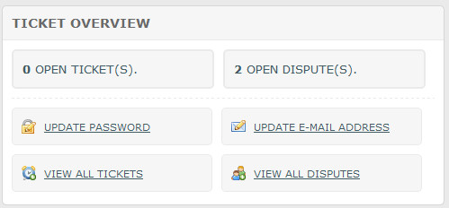
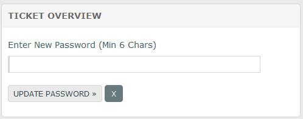
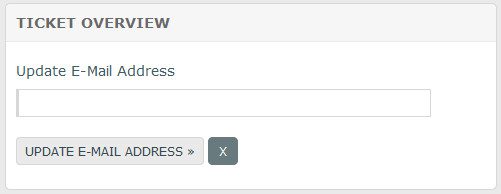
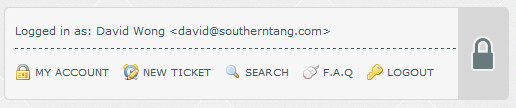

Documentation -


Documentation -

COMMERCIAL VERSION INCLUDES: - FREE upgrades for life - One time payment, NO subscriptions - ALL features unlocked and unlimited
Overview
The ticket portal is where visitors can view current and old tickets/disputes. Old tickets may be re-opened at any time, unless locked by admin, in which case only admin can re-open them.
Account Overview
When logged in, visitors can see an overview of how many tickets they have. Links are also provided to view all tickets, change password and
change email addresses. These options should be fairly self explanatory:

When clicking to change passwords or email addresses, div appearance changes as follows:


More info on these options below. Clicking X returns the div to its original view.
Account Menu Bar
When logged in, visitors have a menu bar at the top of the page:

My Account - Return to account overview page. Clicking main logo also returns to this page.
New Ticket - Launches new ticket screen with name/email pre-filled.
Search - Shows search div.
F.A.Q - Shows F.A.Q page.
Logout - Logs visitor out of portal. Logout is automatic on browser closure.
Update Password
Clicking this option shows the change password box as shown above. The default min characters is 6. If you wish to increase this, edit the 'PASS_CHARS' option in the 'control/user-defined/defined.inc.php' file. Notification is sent on a password change, which is good for security. If you don`t want to send the email, update the 'CHANGE_PASS_NOTIFICATION' option in the same file to 0.
Update E-Mail Address
Clicking this option shows the email update box as shown above. Notification is sent on an email change. If you don`t want to send the email, update the 'CHANGE_EMAIL_NOTIFICATION' option in the 'control/user-defined/defined2.inc.php' file.
View All Tickets
Click this link to see a list of all tickets.
View All Disputes
Click this link to see a list of all dispute tickets.